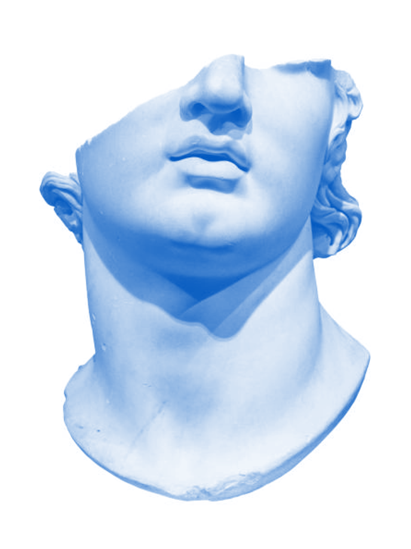
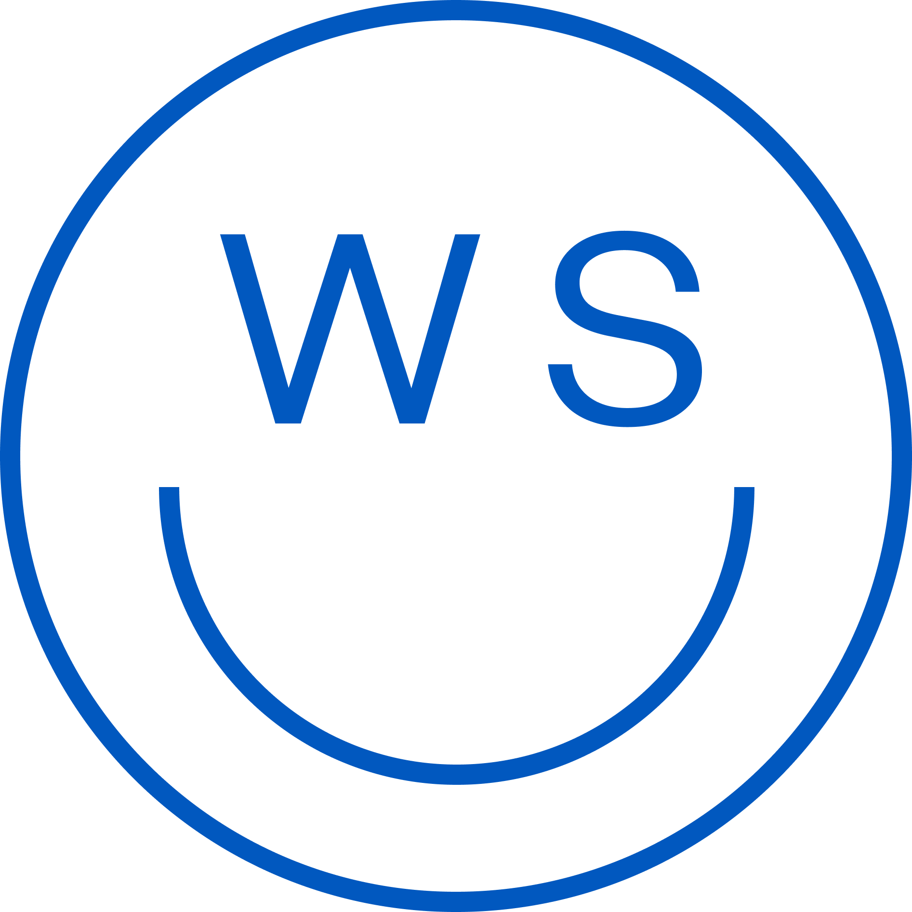

Visual identity · Typography
Wechselspiel
Wordmark, type and colour studies explored through social graphics and a beta menu.


I developed wordmark and typography variations for Wechselspiel, then applied them across Instagram assets and a beta menu. The applications gave the identity two different jobs. A social image had to read quickly, while the menu had to support longer reading and clear hierarchy. Placing the two side by side made it easier to see which ideas held together across formats.
in the making

